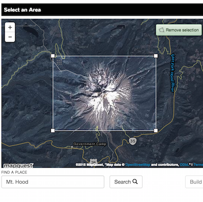
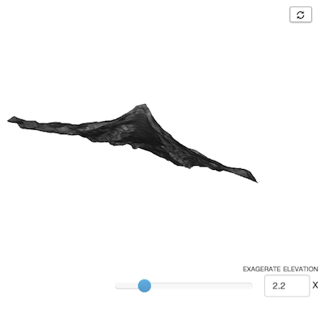
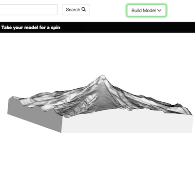
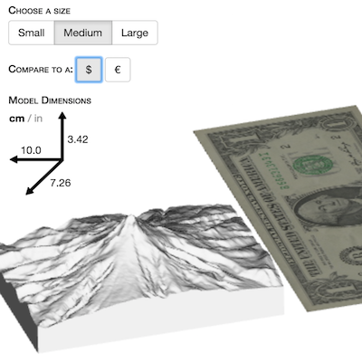
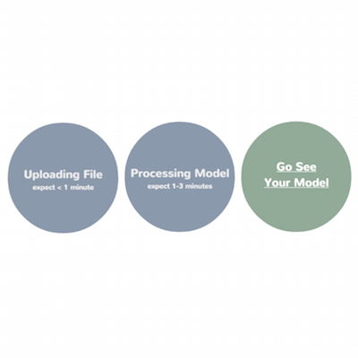
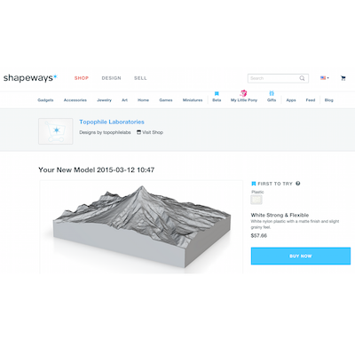
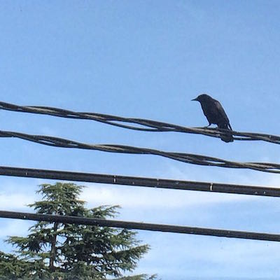
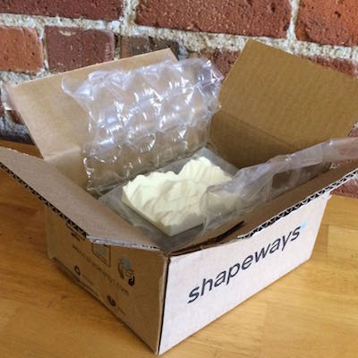

Topophile helps you create 3D models of the world. Topophile teams up with 3D printing experts
Shapeways.com to turn your designs into physical forms. Use Topophile to design your model and upload it to Shapeways. Order a print of your model from Shapeways and they’ll
ship it to you.
Here's how you build your own model







